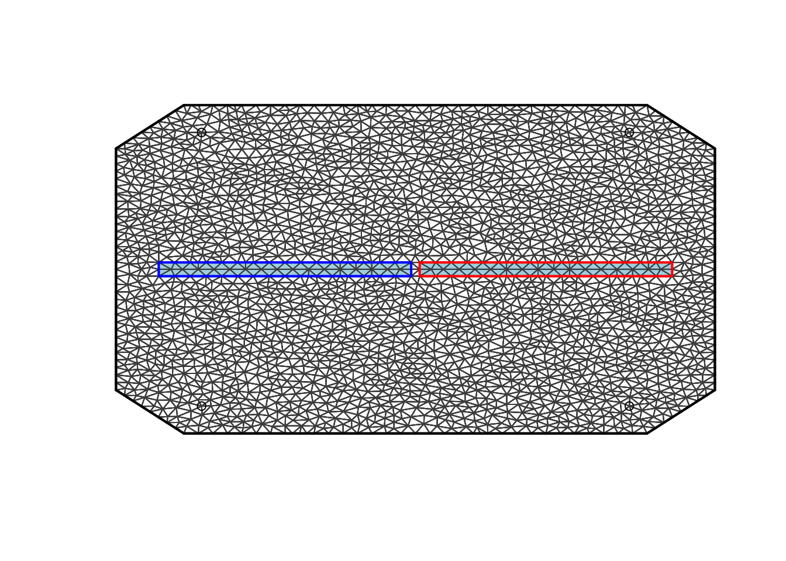
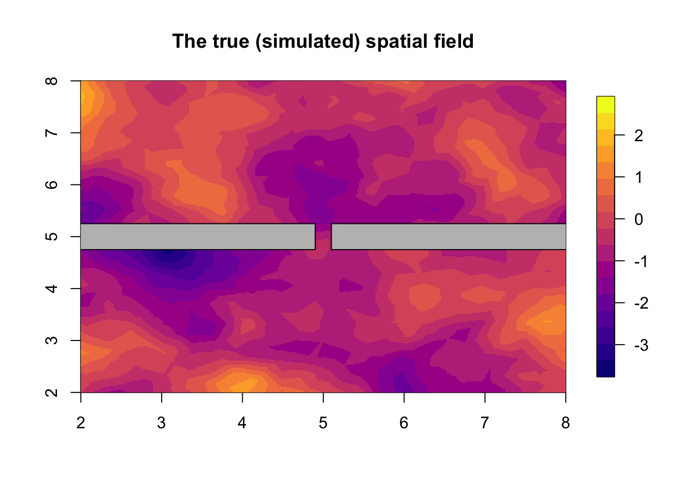
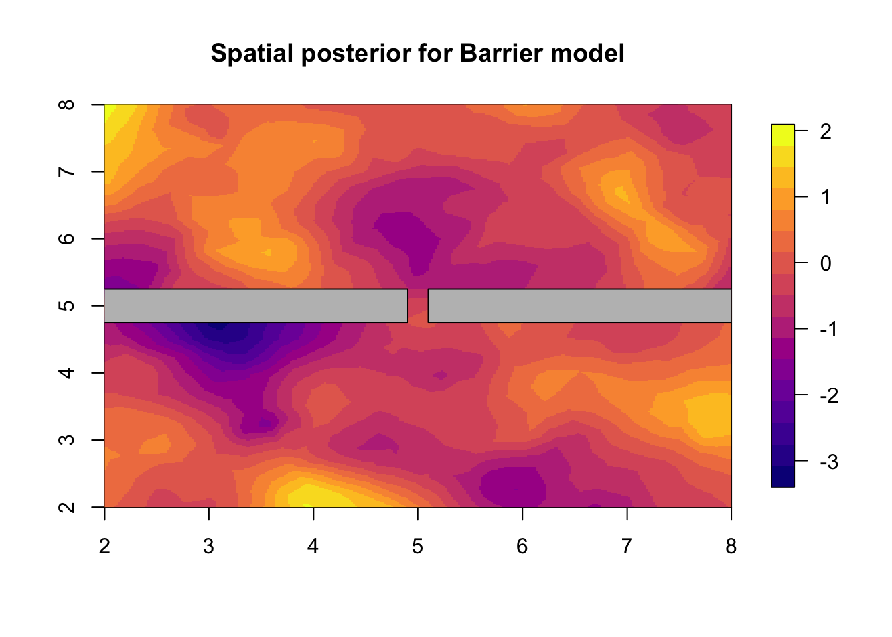
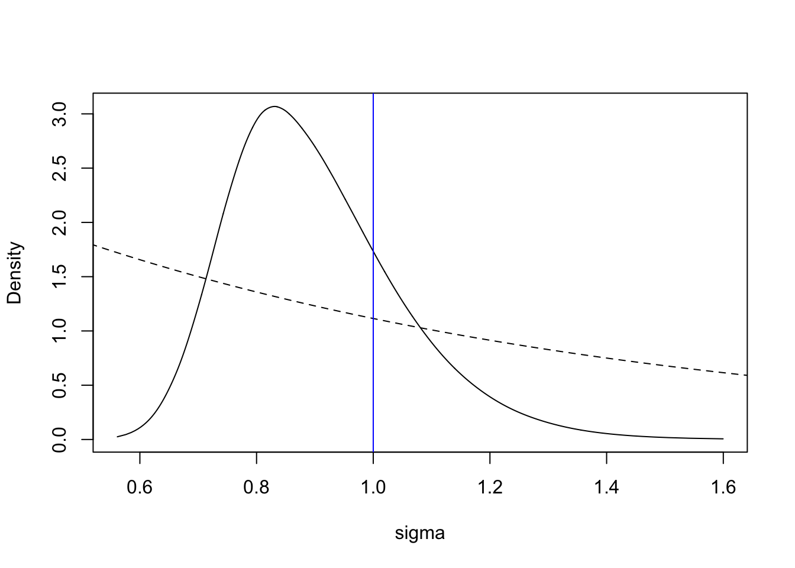
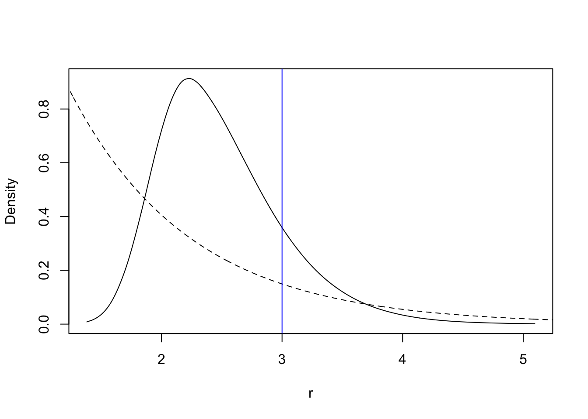

In this topic we show an example of the Barrier model, with simulation, inference and plotting. The example terrain/map/study-area has a barrier going from west to east, and a gap in the middle of the barrier.
This page is (as usual) a self-contained example of a good solution.
At the end follows sections on how to avoid errors when constructing an example like this, and some extra information on how to do things that are slightly different from this example.
We load the libraries and functions we need. Attention: You need to have a recent version of INLA (November 17th 2017 or later).
You may need to install these libraries (Installation and general troubleshooting). Feel free to save the web location where the functions are defined as an R-file on your computer. We also set random seeds to be used later.
library(INLA)
library(fields)
library(rgdal)
library(viridisLite)
set.seed(2016)
set.inla.seed = 2016We will create the representation of our spatial domain, i.e. the locations where the random effect is defined.
We set up a square polygon p to define the barrier. In this example, I know I want to have a \([0, 10]\times [0, 10]\) study area, and I construct the barrier to fit inside this. In general, to use these barrier models, you need the barrier region (e.g. land) to be represented by a polygon. In most cases, you will use shapefiles or maps or other sources for determining your barrier, as in BTopic107.
Talking about polygons in general, however, is out of the scope of this tutorial. More information about polygons can be found in the R-packages sp and maps.
smalldist = 0.2
# - the width of the opening in the barrier
width = 0.5
# - The width/thickness of the barrier
local.square.polygon = function(xlim, ylim){
# - output is a square
xlim = range(xlim); ylim = range(ylim)
corner1 = c(xlim[1], ylim[2])
corner2 = c(xlim[2], ylim[1])
poly = Polygon(rbind(corner1, c(corner1[1], corner2[2]), corner2, c(corner2[1], corner1[2]), corner1), hole = FALSE)
return(SpatialPolygons(list(Polygons(list(poly), ID = runif(1)))))
}
poly1 = local.square.polygon(xlim=c(-1, 5-smalldist/2),
ylim=5+width*c(-.5, .5))
poly2 = local.square.polygon(xlim=c(5+smalldist/2, 11),
ylim=5+width*c(-.5, .5))
poly.original = SpatialPolygons(c(poly1@polygons, poly2@polygons))
plot(poly.original, main="Barrier area polygon")First we set the input variables. Feel free to experiment with different values for smalldist and width, as changes can result in markedly different behavior.
We set up the mesh which will be the numerical/discrete representation of the spatial study region. We will not describe the process of mesh construction in this section. Good mesh construction is a somewhat involved process see BTopic104. Some of you may know how to construct good meshes already, e.g. from
the SPDE-tutorial.
max.edge.length = 0.4
# - The coarseness of the finite element approximation
# - Corresponds to grid-square width in discretisations
# - - Except that finite element approximations are better
# - Should be compared to size of study area
# - Should be less than a fourth of the estimated (posterior)
# spatial range
# - Up to 8x computational time when you halve this valueloc1 = matrix(c(0,0, 10,0, 0,10, 10,10), 4, 2, byrow = T)
# - This defines the extent of the interior part of the mesh
# - In an application, if you want the mesh to depend on your
# data locations, you may use those locations instead
seg = inla.sp2segment(poly.original)
# - Transforms a SpatialPolygon to an "inla polygon"
mesh = inla.mesh.2d(loc=loc1, interior = seg,
max.e = max.edge.length, offset=1)
# - The INLA mesh constructor, used for any INLA-SPDE modelThe interior argument of inla.mesh.2d makes sure that the triangles in the mesh respect the boundary of our barrier.
Next, we will pick out which triangles in the mesh belongs to the barrier area.
tl = length(mesh$graph$tv[,1])
# - the number of triangles in the mesh
posTri = matrix(0, tl, 2)
for (t in 1:tl){
temp = mesh$loc[mesh$graph$tv[t, ], ]
posTri[t,] = colMeans(temp)[c(1,2)]
}
posTri = SpatialPoints(posTri)
# - the positions of the triangle centres
barrier = over(poly.original, SpatialPoints(posTri), returnList=T)
# - checking which mesh triangles are inside the barrier area
barrier = unlist(barrier)
poly.barrier = inla.barrier.polygon(mesh, barrier.triangles = barrier)## Warning in RGEOSUnaryPredFunc(spgeom, byid, "rgeos_isvalid"): Self-
## intersection at or near point -2 0.58578644000000002## mesh.polys is invalid## Warning in rgeos::gUnaryUnion(mesh.polys): Invalid objects found;
## consider using set_RGEOS_CheckValidity(2L)## Warning in RGEOSUnaryPredFunc(spgeom, byid, "rgeos_isvalid"): Self-
## intersection at or near point -1 4.75## mesh.polys is invalid## Warning in rgeos::gUnaryUnion(mesh.polys): Invalid objects found;
## consider using set_RGEOS_CheckValidity(2L)# - the Barrier model's polygon
# - in most cases this should be the same as poly.originalThen we define the Omega object which is the object that the code for the new Barrier model needs. We also define the poly.barrier which is the spatial polygon needed for plotting the boundaries of the barrier area.
At this point, it is crucial to check that our mesh, and the two areas (normal area and barrier area) are correct. We make sure to always use poly.barrier to plot the barrier from now on, since this is the same as what is used by the algorithm (which may not be true for our original polygon p).
In this figure we see the entire mesh. The grey background is for the barrier area. The light blur background is for the normal area. The blue and red squares are the boundaries of the barrier area. The black circles are our initial locations (here, we use them only to determine the extent of the mesh).
plot(mesh, main="Mesh and Omega")
plot(poly.barrier, add=T, col='lightblue')
plot(mesh, add=T)
points(loc1)
The triangles here are light blue (normal area) and grey (barrier area). The four circles are the mesh locations. The blue and red squares are a part of the mesh object.
Next we define a function defining how to plot any spatial fields (for this example). We have also defined the part of space that is to be plotted, in any future plots, namely xlim=ylim=c(2,8). (Since we only care about this region, the mesh extension is large enough. We discuss mesh extensions in a different topic)
local.plot.field = function(field, ...){
xlim = c(2, 8); ylim = xlim;
proj = inla.mesh.projector(mesh, xlim = xlim,
ylim = ylim, dims=c(300, 300))
# - Can project from the mesh onto a 300x300 grid
# for plots
field.proj = inla.mesh.project(proj, field)
# - Do the projection
image.plot(list(x = proj$x, y=proj$y, z = field.proj),
xlim = xlim, ylim = ylim, col = plasma(17), ...)
# - Use image.plot to get nice colors and legend
}
print(mesh$n)## [1] 2613# - This is the appropriate length of the field variableThe input variable field must have the same length as there are mesh nodes in the mesh.
Next, we compute the Finite Element matrices needed to solve the SPDE for the non-stationary Barrier model. \[\begin{align} u(s) - \nabla \cdot \frac{r^2}{8} \nabla u(s) &= r \sqrt{\frac{\pi}{2}} \sigma_u \mathcal{W}(s), \text{ for } s \in \Omega_n \\ u(s) - \nabla \cdot \frac{r_b^2}{8} \nabla u(s) &= r_b \sqrt{\frac{\pi}{2}} \sigma_u \mathcal{W}(s), \text{ for } s \in \Omega_b, \end{align}\] To learn more about these equations, see the paper on Arxiv (Bakka et al. 2016), and the appendix therein. Essentially, we are doing all the computations we can in advance, so that solving the system of equations happens quickly at each step of simulation and inference. We will not comment on the internal workings of this function now, but it will be described in detail in another topic.
barrier.model = inla.barrier.pcmatern(mesh, barrier.triangles = barrier, prior.range = c(1.44, 0.5), prior.sigma = c(0.7, 0.5), range.fraction = 0.1)
# - Set up the inla model, including the matrices for solving the SPDEIn this subsection, we simulate data. When simulating data, we are in a sense pretending to be nature, producing a set of observations for the human observers. We will do inference on this data further down on this page.
First we set the ranges, with a range 0.3 on the first region, i.e. the barrier, and a range of 3 in the second region, i.e. the normal region. The range is the distance at which correlation is essentially zero. Then we compute the precision matrix \(Q\) (inverse covariance matrix) for the spatial random field \[u \sim \mathcal N(0, Q^{-1})\]
range = 3
# - the spatial range parameter
Q = inla.rgeneric.q(barrier.model, "Q", theta = c(0, log(range)))
# - the precision matrix for fixed ranges
# - Q is a function of the hyperparameters theta = c( log(sigma), log(range1), log(range2),...)Now, we sample a spatial field using the precision matrix \(Q\). This is done through a sparse Cholesky factorization (Rue and Held 2005). Then we plot that field, adding the barrier area in grey on top. The value of the field on the barrier is of no interest, as there can never be observations there.
u = inla.qsample(n=1, Q=Q, seed = set.inla.seed)
u = u[ ,1]
# - access the first sample
local.plot.field(u, main="The true (simulated) spatial field")
plot(poly.barrier, add=T, col='grey')
# - Overlay the barrierNow we simulate the spatial locations and the data. We never have observation locations in the barrier region (e.g. no measurements of fish on land), so the easiest way to sample locations is to sample everywhere, and then just delete those samples that end up in the barrier region. The projector matrix is the function taking a field-defined-on-the-mesh into a field-defined-on-the-data-locations, see BTopic101.
num.try = 500
# - try to sample this number of data locations
loc.try = matrix(runif(num.try*2, min=2, max=8),
num.try, 2)
# - locations sampled inside the barrier will be removed
# in a few lines
temp = SpatialPoints(loc.try)
loc.ok = is.na(over(temp, poly.barrier))
# - only allow locations that are not inside the Barrier area
loc.data = loc.try[loc.ok, ]
A.data = inla.spde.make.A(mesh, loc.data)
# - the projector matrix required for any spatial model
# - this matrix can transform the field-defined-on-the-mesh
# to the field-defined-on-the-data-locations
c(dim(A.data), mesh$n, nrow(loc.data))## [1] 469 2613 2613 469# - shows that the dimensions are correct
u.data = A.data %*% u
# - project the field from the finite element
# representation to the data locationsNext we create the dataframe object.
df = data.frame(loc.data)
# - df is the dataframe used for modeling
names(df) = c('locx', 'locy')
sigma.u = 1
# - size of the random effect
# - feel free to change this value
sigma.epsilon = 0.2
# - size of the iid noise in the Gaussian likelihood
# - feel free to change this value
df$y = drop(sigma.u*u.data + sigma.epsilon*rnorm(nrow(df)))
# - sample observations with gaussian noiseWe have now completed the simulation of the spatial dataset.
summary(df)## locx locy y
## Min. :2.0 Min. :2.0 Min. :-2.87
## 1st Qu.:3.4 1st Qu.:3.7 1st Qu.:-0.96
## Median :5.0 Median :5.5 Median :-0.30
## Mean :5.0 Mean :5.1 Mean :-0.29
## 3rd Qu.:6.5 3rd Qu.:6.7 3rd Qu.: 0.33
## Max. :8.0 Max. :8.0 Max. : 3.14This is the entire dataframe, and is the only object we ‘know’, besides the spatial mesh and barrier, when we are performing inference.
The model in this subsection not the new model, but the standard spatial model in INLA. We add this for comparing the stationary and Barrier model. This means that the model in this subsection is not the model used for simulation (that model will come in the next subsection).
The stack will be used both for the stationary model and for the Barrier model. This is just a way of organizing the different variables. We could have written this example without using the stack, but if you want to use this model for anything more advanced, you will need this stack functionality.
stk <- inla.stack(data=list(y=df$y), A=list(A.data, 1),
effects=list(s=1:mesh$n,
intercept=rep(1, nrow(df))),
remove.unused = FALSE, tag='est')
# - this is the common stack used in INLA SPDE models
# - see the SPDE-tutorial
# - - http://www.r-inla.org/examples/tutorials/spde-tutorialNext, we set up a standard INLA call for a stationary spatial effect. We use the PC prior for the Gaussian \(\sigma_\epsilon\). We start the numerical optimizer with a good value in control.mode, to reduce the computational time (you may remove this line, but it will take longer). We know where to start the optimizer because we have run this model one without that line. In your case, you may run a subset of your data to find good starting values, especially for space-time models.
model.stat = inla.spde2.pcmatern(mesh, prior.range = c(1, 0.5), prior.sigma = c(1, 0.5))
# - Set up the model component for the spatial SPDE model:
# Stationary Matern model
# - I assume you are somewhat familiar with this model
formula <- y ~ 0 + intercept + f(s, model=model.stat)
# - Remove the default intercept
# - - Having it in the stack instead improves the numerical
# accuracy of the INLA algorithm
# - Fixed effects + random effects
res.stationary <- inla(formula, data=inla.stack.data(stk),
control.predictor=list(A = inla.stack.A(stk)),
family = 'gaussian',
control.family = list(hyper = list(prec = list(
prior = "pc.prec", fixed = FALSE,
param = c(0.2,0.5)))),
control.mode=list(restart=T, theta=c(4,-1.7,0.25)))We look at the standard summary.
summary(res.stationary)##
## Call:
## c("inla(formula = formula, family = \"gaussian\", data =
## inla.stack.data(stk), ", " control.predictor = list(A =
## inla.stack.A(stk)), control.family = list(hyper = list(prec =
## list(prior = \"pc.prec\", ", " fixed = FALSE, param = c(0.2,
## 0.5)))), control.mode = list(restart = T, ", " theta = c(4,
## -1.7, 0.25)))")
## Time used:
## Pre = 1.57, Running = 14, Post = 0.112, Total = 15.7
## Fixed effects:
## mean sd 0.025quant 0.5quant 0.97quant mode kld
## intercept -0.2 0.59 -1.4 -0.22 0.97 -0.23 0
##
## Random effects:
## Name Model
## s SPDE2 model
##
## Model hyperparameters:
## mean sd 0.025quant
## Precision for the Gaussian observations 26.17 2.731 21.240
## Range for s 3.39 0.818 2.223
## Stdev for s 1.38 0.280 0.965
## 0.5quant 0.97quant mode
## Precision for the Gaussian observations 26.03 31.70 25.73
## Range for s 3.24 5.27 2.92
## Stdev for s 1.33 2.01 1.22
##
## Expected number of effective parameters(stdev): 209.30(11.02)
## Number of equivalent replicates : 2.24
##
## Marginal log-Likelihood: -179.05We plot the result of the stationary model in the next figure.
local.plot.field(res.stationary$summary.random$s$mean,
main="Spatial estimate with the stationary model")
# - plot the posterior spatial marginal means
# - we call this the spatial estimate, or the smoothed data
plot(poly.barrier, add=T, col='grey')# - Posterior spatial estimate using the stationary modelThis is the same model as we used for simulating the data. Except that we have now “forgotten” the range \(r_b\) in the barrier area. This range is never known, so it is unreasonable to use it for inference. However, using any small value for the range in the barrier region is OK, it does not need to be the “true value”. For more information about this, see appendix “Choosing barrier range” in (Bakka et al. 2016). The Barrier model is a special case of the Different
First we set up extra variables needed for my implementation of the new model. My implementation is based on “rgeneric” in INLA, see \inlinecode{inla.doc("rgeneric")}. This part of the code defines what range parameters belong to each area.
formula2 <- y ~ 0 + intercept + f(s, model=barrier.model)
# - The spatial model component is different from before
# - The rest of the model setup is the same as in the stationary case!
# - - e.g. the inla(...) call below is the same,
# only this formula is differentFinally, we are ready to run inference on the simulated dataset. Similarly to the stationary case, you may remove the control.mode input. That will cause the model to run slightly slower. If you have trouble with inference in a different dataset, setting these values (the initial values for the algorithm) often solves the problem. Please note that these are the values for the internal parametrization, so \(\log(precision), \log(sigma), \log(range)\), see result$internal.summary.hyperpar.
res.barrier = inla(formula2, data=inla.stack.data(stk),
control.predictor=list(A = inla.stack.A(stk)),
family = 'gaussian',
control.family = list(hyper = list(prec = list(
prior = "pc.prec", fixed = FALSE,
param = c(0.2,0.5)))),
control.mode=list(restart=T, theta=c(3.2, 0.4, 1.6)))summary(res.barrier)##
## Call:
## c("inla(formula = formula2, family = \"gaussian\", data =
## inla.stack.data(stk), ", " control.predictor = list(A =
## inla.stack.A(stk)), control.family = list(hyper = list(prec =
## list(prior = \"pc.prec\", ", " fixed = FALSE, param = c(0.2,
## 0.5)))), control.mode = list(restart = T, ", " theta = c(3.2,
## 0.4, 1.6)))")
## Time used:
## Pre = 1.27, Running = 20.7, Post = 0.136, Total = 22.1
## Fixed effects:
## mean sd 0.025quant 0.5quant 0.97quant mode kld
## intercept -0.15 0.59 -1.3 -0.17 1 -0.19 0
##
## Random effects:
## Name Model
## s RGeneric2
##
## Model hyperparameters:
## mean sd 0.025quant
## Precision for the Gaussian observations 24.179 2.433 19.740
## Theta1 for s 0.204 0.190 -0.136
## Theta2 for s 1.331 0.222 0.933
## 0.5quant 0.97quant mode
## Precision for the Gaussian observations 24.061 29.065 23.832
## Theta1 for s 0.191 0.588 0.145
## Theta2 for s 1.315 1.781 1.259
##
## Expected number of effective parameters(stdev): 182.12(11.65)
## Number of equivalent replicates : 2.58
##
## Marginal log-Likelihood: -156.54We plot the result of the Barrier model in the next figure.
local.plot.field(res.barrier$summary.random$s$mean,
main="Spatial posterior for Barrier model")
# - plot the posterior spatial marginal means
# - we call this the spatial (smoothing) estimate
plot(poly.barrier, add=T, col='grey')
# - Posterior spatial estimate using the Barrier modelCompare this plot to the plot “The true (simulated) field” and to the stationary solution “Posterior spatial estimate using the stationary model”. Depending on the simulated field (i.e. the random seeds), these figures may look very much the same, or be very different. Our experience is that, even when the spatial means look quite different, there may be a big difference in model fit or prediction evaluations. Feel free to also plot the quantiles and sd of the two posterior fields. For a discussion of the results we refer you to the main paper .
For how to plot the posterior of the hyper-parameters in the stationary model, see BTopic108.
res.barrier$summary.hyperpar## mean sd 0.025quant 0.5quant
## Precision for the Gaussian observations 24.2 2.43 19.74 24.06
## Theta1 for s 0.2 0.19 -0.14 0.19
## Theta2 for s 1.3 0.22 0.93 1.32
## 0.97quant mode
## Precision for the Gaussian observations 29.07 23.83
## Theta1 for s 0.59 0.14
## Theta2 for s 1.78 1.26This shows the ordering of the hyper-parameters, and is how we know what index to use later in the plots.
To plot the hyper-parameters in the Barrier model, we must know the transformations. \[\begin{align} \sigma &= e^ {\theta_1} \quad \text{is the marginal standard deviation} \\ r &= e^ {\theta_2} \quad \text{is the spatial range} \end{align}\]
For the parameter \(\sigma\), the code is as follows (the dashed line is the prior, with an arbitrary scaling).
tmp = inla.tmarginal(function(x) exp(x), res.barrier$marginals.hyperpar[[2]])
plot(tmp, type = "l", xlab = "sigma", ylab = "Density")
xvals = seq(0, 10, length.out=1000)
lambda = 0.99; lines(xvals, 3*exp(-lambda*xvals), lty='dashed')
abline(v=1, col="blue")
For the parameter \(r\), the code is as follows (the dashed line is the prior, with an arbitrary scaling).
tmp = inla.tmarginal(function(x) exp(x), res.barrier$marginals.hyperpar[[3]])
plot(tmp, type = "l", xlab = "r", ylab = "Density")
xvals = seq(0, 10, length.out=1000)
lambda = 1.00; lines(xvals, 3*exp(-lambda*xvals), lty='dashed')
abline(v=range, col="blue")
6 Comments
The example ends here. The following sections are comments to this example.
6.1 Mistakes to avoid
I will not discuss potential mistakes from the definition of the mesh or the barrier, as that is included in other topics. Make sure that you do not mix up what area is the barrier, and what is the normal.
6.2 How to use this as a model component in other models
Here, I outline how to do things that are slightly different.
To add more covariates in the model, add them in the
inla.stack. See the SPDE-tutorial for more information on this .You can easily use other likelihoods, by changing the argument of the -call. See for a description of these. Please make sure you choose good priors for any hyper-parameters in the likelihood (the choice we made in the code here is aarbitrary and not good).
You can also add different random effects to the formula (see info about latent models on ). When you use additional random effects, you must include them into the stack, similarly to how the intercept is here included in the stack. For examples of this, use the SPDE tutorial .
References
Bakka, H., J. Vanhatalo, J. Illian, D. Simpson, and H. Rue. 2016. “Accounting for Physical Barriers in Species Distribution Modeling with Non-Stationary Spatial Random Effects.” ArXiv preprint arXiv:1608.03787. Norwegian University of Science; Technology, Trondheim, Norway.
Rue, Håvard, and Leonard Held. 2005. Gaussian Markov Random Fields: Theory and Applications. Vol. 104. Monographs on Statistics and Applied Probability. London: Chapman & Hall.